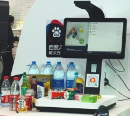
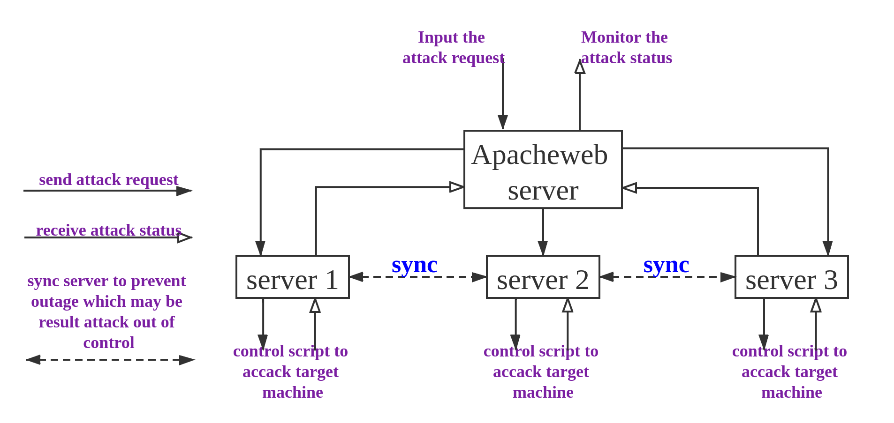
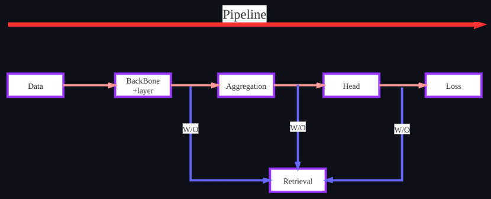
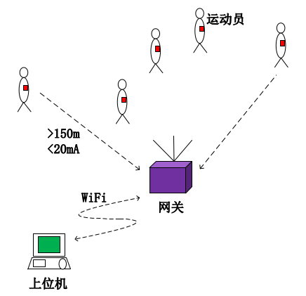
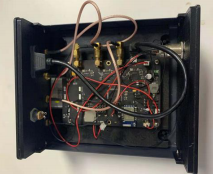
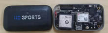
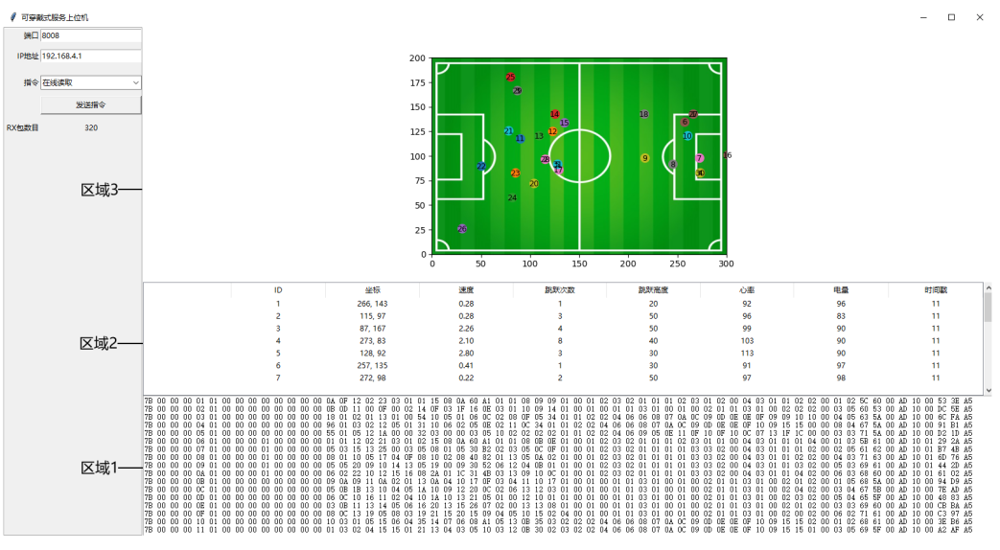

Cheng Yang 杨成
I am a researcher at SUTPC(ShenYanAI), Shenzhen, where I work on deep learning and computer vision, etc. Before that, I did my master degree at school of EIC, Huazhong University of Science and Technology(HUST) , where I was advised by Prof. Peng Guo. I did my bachelors at school of Information and Intelligence, Hunan Agricultural University(HUNAU).
News
Intern Experiences
In my view, I should be curious about many things, especially when I am a student. And then choose a research direction that suits me. From undergraduate to master, I have learned embedded development, backend development, computer vision and other related technologies. The related experiences and projects are as follows.
Optimize classification models
Those project aim to optimize some classification models, such as "Cyclist and pedestrian classification model"
In this projects of ReID, I only used 3w imbalanced( cyclist: pedestrain ~ 1:30) images to complete the classification of 300w images. Through research related work, such as gan, image composition,
I proposed a method callde 'Copy and Paste Based on Pose(CPP)', which can effectively alleviate the sample imbalance problem in this situation.
Then I used a simple model(EfficientNetB5) and corresponding training skills to achieve classification accuracy of 99.6%. For detailed information about CPP, please see
arXiv.
The Commodity Automatic Checkout Counter

This project aims to achieve high-precision commodity bill settlement. When uses place the dinner plate under its camera, it will quicky automatically
generate the correct bill within 1 second.
For me, I was responsible for its visual processing, such as commodity detection and classification. In order to make it work more stable, I combined object detection and retrieval to solve the problem and avoid
frequently updates of the model. Specifically, I decoupled the problem of commodity detection into two sub-problems of the object detection and
object retrieval. The detection model is responsible for detecting foreground object, and the retrieval model is responsible for identifying the
category of the object. The final overall accuracy can reach 98%+.
I used YoLov3 as the basic detection model in this project. By following the progress at that time, and making
trade-offs in inference time and accuracy, I added SPP, DCN, IOU Aware to YoLov3 to improve
detection accuracy. In addition to this, I used ResNeXt101 as the basic classification model. and the output from
pool5 is used as the metric vector during retrieval. To improve the accuracy of retrieval, I add double loss(Softmax loss, Triplet loss) to restrict feature space, so that lead to the model output with a larger inter-class
variation and a smaller intra-class variation.
Aegis-The Blue Army Attack Platform

This project aims to design a attack platform called Aegis—The Blue Army Attack Platform, which used to verify the
performance of the company's defense platform via some DDOS attack.
In this project, I was responsible for the frontend and backend programs. When users input the attack request with specific parameters to web,
the web server will forward the request to the corresponding server. Then, the server as a Zombie computer to call the
corresponding script to attack target machine. And the server reflects the attack status in real-time to the web for display to users. Last but
not least, in order to maintain control of the attack state and ensure the reliability of the system, even if the corresponding server suddenly outage,
I must keep in sync between different servers.
This product called the LIFX blub. We can control one or more bulbs by using mobile phone's wifi, and there was a variety of
lighting effects. It was supported real-time control, flexible portal configuration in mobile, and so on.
In this project, I was responsible for the its hardware program control. We used the ESP8266 as the Micro Controller Unit to drive bulbs, which comes with a
lightweight network protocol stack and can act as Access Point or Staion. We adopted the lifx protocol which
based on the UDP network protocol. so, Based on the LIFX protocol and reliable program, we have implemented many functions by only using a moblie
phone to control it. For example, Registering and resetting the network configuration for web's portal configuration, setting a variety of light
colors and intensities, and driving multiple bulbs under the same subnet at the same time by the UDP broadcast.
BTW, I would like to say, the LIFX Blub is pretty cool!. I mean, for me, it's my first commercial project at the undergraduate level, and it’s on sale(about $7).
Competition
step 1) Choosing three basic network as ours models: EfficientNet-B5, SEResnext101, ResNeSt50;
step 2) Data preprocessing and model training: 5-fold cross validation, albumentations, warm up, label smoothing, Adam, GeM, BN Head, ArcFace, EMA and so on;
step 3) Feature post-processing: TTA, PCA Whitening, feature fusion, and Re-rank.
step 4) Analyzing some badcases: We found that there are multi-agent scene in the datasets(About 100+). For example, in an image, there are both a display, a host and a mouse, and they lead to unclear feature representation. Because we were surprised to find our model cannot obtain similar results in these images. So, we used their attention map to cut the image into multiple small images corresponding to each subject, then we aggregated the feature of multiple small images as its features.
step 1) Choosing the yolov5 as ours basic model;
setp 2) Data preprocessing, anchor re-clustering and model training: the Mosaic and albumentations, label smoothing, EMA as so on;
step 3) Simple parameter adjustment: find a better Iou threshold when calculating nms;
step 4) Post-processing: TTA + WBF + PL + OOF;
step 5) Analyzing some badcases: We found that there are some redundant prediction bounding bbox when the wheat occlusion is serious. So we summarized the corresponding rules and peform filtering.
In conclusion, It was the first time I participated in the competition. Some time after that, I re-summarized the competition, and found some error methods, such as only adjusting iou threshold is the wrong way, analyzing badcase and setting some rules to 'solov' the misdetection will undoubtedly only lead to over-fitting results. This experience taught me that when analyzing problems, we must learn to consider from a macro perspective. At the same time, the analysis of badcase should not be discussed separately from model and loss.
BTW, The controversy caused by yolov5 is too great, our results is were cancelled. If not, our score should be in the top 2%.
Projects
In the second half of the master's career(01/2020 ~ 06/2021), I mainly focus on computer vision, and take it as my research direction. In the first half of the master's career(09/2018 ~ 12/2019), I mainly focus on hardware programming, embedded development, software development, and have learned some hardware-related knowledge. At the same time, my master's thesis is also closely related to them.
PyCR(Pytorch for Classification and Retrieval)

When I finished the HuaWei's competition, I started to think about how to complete some tasks efficiently. The classification and retrieval are familiar to me, So I was thinking about how to build a
pipeline, which can make me implement these functions better and faster.
At this stage, there is no pipeline that directly merge classification tasks and retrieve tasks. For example, FastReID is a framework for end-to-end retrieving in ReID, PyRetri is a pipeline that directly
uses features for post-processing, and does not involve the training process. So, I have build a pipeline, which can do the end-to-end processing of classification and retrieval respectively.
For detailed processing methods, please see github.
Design and Implementation of a low-complexity wearable system for football sports monitoring
  
This is research topic, but also a project. Its goal is to create a low-complexity, low cost and high-efficientcy(QPS) product which serves group sports monitoring. It's mainly to monitor some
pyhsical information of athletes, such as speed, heart rate, real-time position, number of jumps and height, etc.
The projects is divided into three parts, which include a lot of collection nodes(30+), the gateway(1), and display terminal(1). Each collection nodes is composed of CC1310 and a variety of sensors, which are
used to collect real-time physical data of athletes. The gateway is mainly composed of STM32, multiple CC1310, ESP8266 and other auxiliary chips(FLASH, Power management). The function of the gateway is
is responsible for transmission of data from multiple nodes to the display terminal and distribute commands from the terminal to all nodes. The display terminal is responsible for some command control and
visualization of data from the multiple nodes. Each parts is implemented based on the corresponding Finite State Machine.
To guarantee the stability of the system, low complexity(~$300), high access volume(~1Hz), long-distance communication(>150m) and low power consumption(<2mA) functions, I have completed the corresponding hardware, software and
communication and data processing algorithm design. Please see my graduation thesis for the detailed plan.
Last but no least, Although this is my graduation thesis, I would like to think my senior Liu for his helped in high-frequency circuit design, and thank my classmates for testing with me and helping me find bugs,
and thank my supervisor Peng Guo for his long-term guidance.